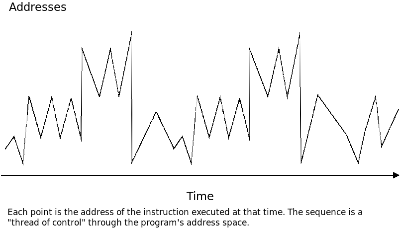
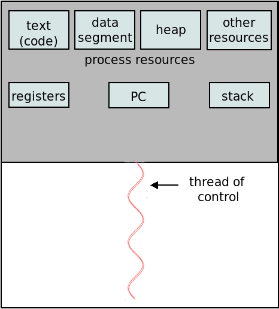
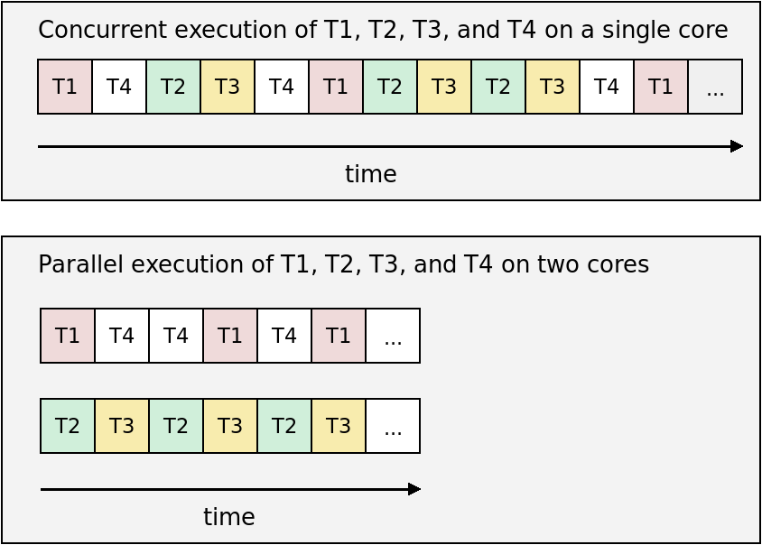
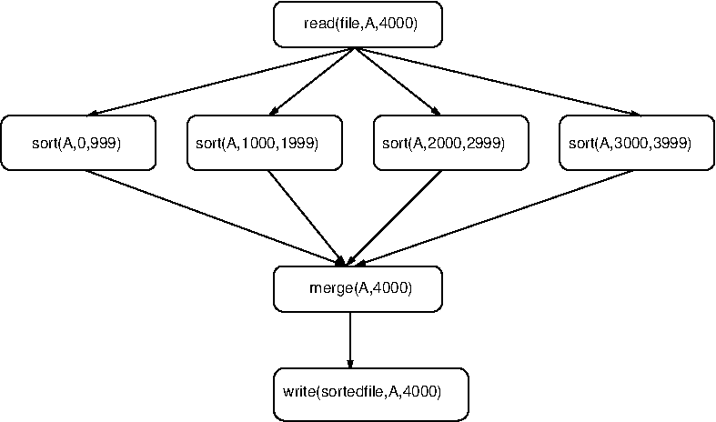
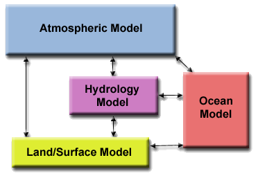
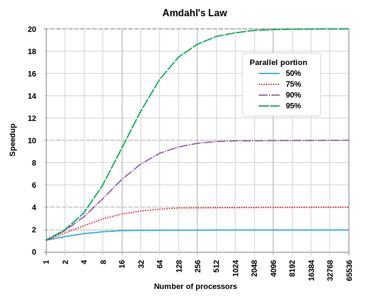
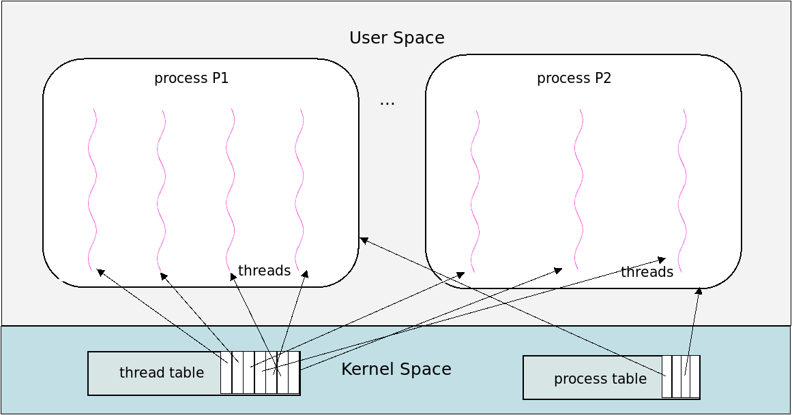

class: center, middle, title-slide ## CSCI 340 Operating Systems <br> ## Chapter 4: Threads .author[ Stewart Weiss<br> ] .license[ Copyright 2020 Stewart Weiss. Unless noted otherwise all content is released under a [Creative Commons Attribution-ShareAlike 4.0 International License](https://creativecommons.org/licenses/by-sa/4.0/). Background image: roof of the EPIC Museum, Dublin, by Stewart Weiss. ] --- name: cc-notice template: default layout: true .bottom-left[© Stewart Weiss. CC-BY-SA.] --- name: tinted-slide template: cc-notice layout: true class: tinted --- name:toc ### Table of Contents [Prologue: Processes Revisited](#prologue-1)<br> [Prologue: Threads](#prologue-2)<br> [About This Chapter](#about-chapter)<br> [Chapter Objectives](#objectives)<br> [Motivation](#more-motivation)<br> [What is a Thread?](#thread-posix-def)<br> [Thread Resources](#thread-resources)<br> [Single- and Multi-Threaded Processes](#thread-visualization)<br> [Visualizing Threads](#thread-symbol)<br> [Reasons for Multi-threading](#thread-uses)<br> [Concurrency Versus Parallelism](#concurrency)<br> [Visualizing Concurrency and Parallelism](#concurrency-visualized)<br> [Challenges in Parallel Programming](#parallel-challenges)<br> [Sources of Parallelism in Problems](#parallelism-models)<br> [Visual Comparison](#parallelism-visualized)<br> [Speed-Up](#speedup)<br> [Limitations of Parallelization](#speed-up-limits)<br> [Amdahl's Law](#amdahls-law)<br> [Applications of Amdahl's Law](#amdahl-examples)<br> [Maximum Possible Speedup](#amdahl-limit)<br> [Plot of Amdahl's Law](#amdahl-plot)<br> --- ### Table of Contents [Multi-threading Models](#multi-threading-models)<br> [Thread Implementations](#thread-types)<br> [User Level Threads](#user-threads-1)<br> [A POSIX Threads Example](#pthreads-example-1)<br> [Some Explanation](#pthreads-2)<br> [User Level Threads: Pros](#user-threads-pros)<br> [User Level Threads: Cons](#user-threads-cons)<br> [Kernel Level Threads](#kernel-level-threads-1)<br> [Kernel Level Threads: The Confusion](#kernel-level-threads-2)<br> [Kernel Level Threads: A Visualization](#kernel-level-threads-3)<br> [The Linux Definition of a Thread](#thread-linux-def)<br> [Kernel Threads in Linux](#kthread-example)<br> [A Linux Kernel Thread Example](#kthread-example)<br> [Kernel Threads in Linux](#linux-kernel-threads)<br> [Kernel Threads: Pros and Cons](#kernel-threads-2)<br> [Threading Issues](#thread-issues)<br> [References](#references)<br> <!--TOC_END--> --- name: prologue-1 ### Prologue: Processes Revisited In the preceding chapter, you learned about .greenbold[processes]. A process was defined as a program in execution, and it was assumed that a process had a single .greenbold[thread of control]. What does this mean? -- - A ".bluebold[thread of control]" is a .redbold[sequence] of instructions that is executed .redbold[one instruction at a time], .redbold[one after the other], during the execution of a program.super[1]. .left-column[ Imagine that when a program executes, each time a machine code instruction is executed, the time of execution and address of the machine code instruction are written to a line of output. A single thread of control through a program would generate a graph such as the one to the right. ] .right-column[  ] -- .below-column[ .redbold[Food for thought]: Why does this graph have repeating patterns, and why does it make big jumps? ] --- name: prologue-2 ### Prologue: Threads Modern operating systems have made it possible for a process to have .greenbold[multiple threads of control]. These multiple threads of control are called .greenbold[threads]. -- .left-column[ Multiple threads of a process can run .redbold[in parallel] and can therefore speed up a computation, taking advantage of the multiple processors that exist in almost all modern computers. To the right is a graph of two threads of a multi-threaded program. ] .right-column[ <img src="figures/thread-paths-2.png" width=100% alt="parallel threads"> ] -- .below-column[ Some programs can have hundreds or even thousands of threads. .redbold[Modern operating system kernels are always multi-threaded.] ] --- name: about-chapter ### About This Chapter Because threads are so ubiquitous and also so hard to understand, they are an important topic in an operating systems course, and this chapter is entirely devoted to their study. In particular, it will cover the following topics: - Multicore programming - Multi-threading models - Thread libraries - Implicit threading - Threading issues --- name: objectives ### Chapter Objectives You should be able to - identify the basic components of a thread, and compare and contrast threads and processes; -- - describe the advantages and disadvantages of designing multi-threaded programs as compared to single-threaded programs; -- - explain and apply .greenbold[Amdahl's Law]; -- - describe various multi-threading models, explain how they differ, and identify the strengths and weaknesses of each model; -- - explain what a thread library is and name three different thread libraries; -- - read, understand, and modify simple programs that use the .greenbold[Pthreads] library; -- - explain what implicit threading is and describe .greenbold[thread pools], the .greenbold[fork-join model], and .greenbold[OpenMP]; -- - describe how the Linux operating system represents threads; and -- - read and understand simple multi-threaded programs that use the Linux threading API. --- name: more-motivation ### Motivation .redbold[Why are threads an important topic?] -- - Modern kernels are multi-threaded. Understanding them requires understanding threads. -- - Most modern applications are multi-threaded. Examples: - A web browser process might have one thread to render images and text and another to download data. - A web browser might run each plug-in in a separate thread. - A chess program might have one thread "listening" for user input and rendering the chess board, and another analyzing future moves, while the user is thinking. -- - Creating processes is much more time-consuming than creating threads. - Processes use many resources than threads overall. -- - Because threads share many of the same resources, cooperation among the threads that share resources .redbold[can] be easier. -- - .redbold[But multi-threading a program is difficult and dangerous and requires great understanding.] .redbold[Hence it is important to understand how to use threads.] --- name: thread-posix-def ### What is a Thread? We have been discussing threads as an abstraction until now, so it is time to ask, what exactly is a thread? -- While there is no single definition, the one most commonly used is the one defined by POSIX: > _A .bluebold[thread] is the set of all resources necessary_ > _to represent a single thread of control through a program's executable code._ This is the definition implicit in the Silberschatz, Gagne, Galvin textbook. -- From this definition, it follows that a thread has resources. In particular, because it executes instructions, it needs access to an address space containing executable code, usually the address space of a parent process. It also follows that a thread is part of a process: processes contain threads and threads do not "live outside of processes." -- .redbold[We will use this definition of threads for now, but will present an alternative definition later.] --- name: thread-resources ### Thread Resources When a process has multiple threads, the question is, .redbold[which resources are unique to each thread and which are shared by all threads?] -- Each thread within that process .redbold[has its own]: - unique thread ID - program counter (PC) - register set - user stack In some implementations, other resources such as signal masks are thread-specific. -- All threads .redbold[share] many process resources, but the most important are: - the executable code, i.e., the .greenbold[text segment], - the .greenbold[heap] memory, where dynamically allocated data is stored, - the .greenbold[data segments], containing initialized and uninitialized data, - the .greenbold[command line arguments], .greenbold[environment variables], and .greenbold[open files]. --- name: thread-visualization ### Single- and Multi-Threaded Processes We can visualize single-threaded and multi-threaded processes as shown below: .left-column[ .center[ Single-threaded Process]  ] .right-column[ .center[ Multi-threaded Process] <img src="figures/multithreaded.png" width=90% alt="multi-threaded process"> ] -- .below-column[ Notice that, in the multi-threaded process to the right, each thread's stack, registers, and program counter are no longer process resources, but .redbold[thread-private] resources. ] --- name: thread-symbol ### Visualizing Threads .left-column-large[ In the preceding illustration of a multi-threaded process, there were four threads, each of which was represented by the abstract figure to the right. In this figure, the curved line represents the thread of control through the set of instructions executed by the thread. ] .right-column-small[ ] -- An individual thread is often depicted in a simpler way, eliminating the hardware resources, and just depicting it as just the squiggly flow of control: We use this convention in the remainder of the notes. --- template: tinted-slide layout: true --- name: thread-counting-activity count: false class: breakout ### A Thread Counting Activity How many threads does a process have? How can you tell? -- In a few ways. In this activity you will count threads in one particular way. Login to .fixedblue[eniac.cs.hunter.cuny.edu]. Then run the following command: ```bash ps -efwL | more ``` You will see a list of all running processes on .fixedblue[eniac], including their threads, one screenful at a time. (To advance to the next screen, press the .fixedblue[space] bar; to exit the command, type ".fixedblue[q]".) The last field on the line is the command that was executed to create the process (or thread). The 6.super[th] field (with heading .fixedblue[NLWP]) is the number of threads that the given process has. A process with the value 1 in this column has one thread and is thus not multi-threaded. Which process has the most threads? What is the command that created it? How many threads does .fixedblue[gnome-shell] have? --- name: thread-uses ### Reasons for Multi-threading There are several good reasons to write programs that can contain multiple threads. - Code to handle .greenbold[asynchronous.super[1] events] can be executed by a separate thread. Each thread can handle its own event without using some type of asynchronous programming construct. .footnote[ 1 Asynchronous events are events that take place independently of the execution of the program, such as completion of an I/O operation, or the termination of a child process. ] -- - Whereas multiple processes have to use special mechanisms provided by the kernel to share memory and file descriptors, threads automatically have access to the same memory address space, which is faster and simpler. -- - On a multiprocessor architecture, many threads may run in parallel on separate cores, speeding up the computation. More cores can make the program faster. -- - Even on a single processor machine, performance can be improved by putting calls to system functions with expected long waits into separate threads. This way, just the calling thread waits, not the whole process. -- - The response time of interactive programs can be improved by splitting off threads to handle user I/O. By handling I/O in separate threads, the application can respond quickly, even when time-consuming operations are taking place in other threads. --- name: multicore-programming layout: false class: center, middle, inverse ## Multicore Programming We explore how programs can be written that take advantage of the multiple cores and/or processors in a multiprocessor machine. --- template: tinted-slide layout: true --- name: concurrency ### Concurrency Versus Parallelism The first step is to clarify the difference between .greenbold[concurrency] and .greenbold[parallelism]. -- In [Chapter 3, Concurrency](chapter03.html#100), we stated that two processes are .bluebold[concurrent] if their computations can .redbold[overlap in time]. The same is true of threads. In contrast, two processes or threads execute .bluebold[in parallel] if they execute .redbold[at the same time on different processors]. -- A .bluebold[parallel program] is one which contains instruction sequences that can be executed in parallel. -- If it is executed on a single processor, the threads within it can be interleaved in time on the processor. -- A parallel program therefore contains concurrency and can be called a .bluebold[concurrent program]. -- .redbold[The opposite is not true]: a system can have concurrency even though it is not designed as a parallel program and its threads are not running on separate processors. -- The next slide visualizes the distinction. --- name: concurrency-visualized ### Visualizing Concurrency and Parallelism Imagine four threads, T1, T2, T3, and T4, that can be executed in parallel. If they are executed on a single core, as the top figure illustrates, the system is called a concurrent system and the threads are executed .bluebold[concurrently]. If they are executed on two cores, as shown in the bottom figure, with T1 and T4 on one core and T2 and T3 on the other, it is .bluebold[parallel execution]. .center[  ] --- name: parallel-challenges ### Challenges in Parallel Programming It sounds simple enough - create programs that use all of the cores in the computer, so that they run faster and utilize the cores fully. -- Not so. Although the hardware manufacturers have been making processors cheaper each year, packing more of them into computers, writing software for multiprocessors is a .redbold[more difficult task] than writing sequential code. The major problems are: -- - .redbold[Functional Decomposition]. There is no algorithm to decompose a single task into multiple, independent, parallel subtasks. -- - .redbold[Load Balancing]. Decomposing a problem into subtasks in such a way that each has roughly the same amount of computation, to maximize each core's utilization. -- - .redbold[Data Decomposition]. Dividing the data among the subtasks to minimize IPC and divide the work equally, and to do so in a scalable way. -- - .redbold[Data Dependency Analysis]. When data is distributed to the various subtasks, identifying which data in each subtask depends on the computation performed by a different subtask. -- - .redbold[Testing and Debugging]. Unlike sequential software, parallel programs can have errors that depend on the relative rates of execution of the subtasks. Designing tests is very difficult and debugging when failure occur is even harder. --- name: parallelism-models ### Sources of Parallelism in Problems Two sources of inherent parallelism in computational problems are .greenbold[data parallelism] and .greenbold[task parallelism] (also known as .greenbold[functional parallelism].) -- .bluebold[Data parallelism] exists when a task can be decomposed into many subtasks that perform identical operations on different sets of data. Examples include - A digital image on which the same operation must be applied to all pixels or equal-size sub-regions of the image. - The calculation of payroll taxes for all employees of a large company. - A digital representation of a 3D shape that must be rotated through same angle in space, since every point in the object undergoes the same linear transformation. -- .bluebold[Task parallelism] exists when a task can be decomposed into multiple subtasks such that each performs a different function, on the same or different data sets. Examples include - Analysis of census data by data sub-type, such as demographic analysis, economic analysis, and geographic analysis. - Audio data processing, in which audio data filters are applied one after another, in a pipeline. --- name: parallelism-visualized ### Visual Comparison .left-column[ A common source of data parallelism exists in linear arrays of sata that need to be sorted. Certain sorting algorithms are more amenable than others to decomposition into subtasks that act on segments of the array. The diagram below depicts a variation of a parallel mergesort algorithm.  ] .right-column[  Meteorological data can be analyzed using a task decomposition. In the diagram above, the same data is input to four different modeling algorithms, to build four different types of environmental models. ] --- name: speedup ### Speed-Up Suppose that you want to add 1 to every element of an array of 1024 elements. A sequential program would increment every element one after the other, performing .redbold[1024 increment operations] sequentially. -- If we had a machine with 1024 cores (not unreasonable in the scientific computing community), and the know-how, we could write a program with 1024 threads that performed this same computation .redbold[in the time it takes to execute a single increment]. -- .redbold[Right?] -- Not exactly, because the threads have to access memory to do this, and they might be delayed because of memory stalls. But let's pretend for now that this is not an issue. -- The parallel program obviously takes about 1/1024.super[th] the time that the sequential program takes, or that it runs 1024 times faster. This leads to a definition. -- .lightgreenbox[ The .bluebold[speed-up] of a parallel program with respect to a sequential program on a computer with N identical processors with the exact same input data is the sequential program's running time on one processor divided by the parallel program's running time on N processors. ] --- name: speed-up-limits ### Limitations of Parallelization In 1967, .greenbold[Gene Amdahl] argued informally.super[1] that there was an inherent limitation to the amount of speedup that could be obtained by using more processors to perform a computation. .footnote[ 1 See the references at the end of the slides. ] Although his original article contained no formulas whatsoever, his argument was subsequently formulated mathematically and became known as “.bluebold[Amdahl’s Law]”. The starting premise is the following observation. Every program has some fraction of operations in it that must be executed sequentially. For example, - reading from a file, and - filling an array .fixedblue[A] such that .fixedblue[A[i+1]]'s value depends on .fixedblue[A[i]]'s value for all .fixedblue[i] are both inherently sequential. In other words, we cannot simultaneously update .fixedblue[A[i]] and .fixedblue[A[i+1]]. --- name: amdahls-law ### Amdahl's Law Let $f$ be the fraction of operations in a sequential program's computation on a given input that are inherently sequential. $f$ is often called the .bluebold[serial fraction]. Let $N$ be the number of processing cores on the computer on which a parallel version of this same program is run. The speed-up of this parallel version using all $N$ processors has an upper bound given by the formula $$ \text{speedup} \leq \frac{1}{f+\frac{(1-f)}{N}} $$ The value $(1-f)$ is defined as the .bluebold[parallel fraction]. This represents the fraction of code that can be run in parallel. --- name: amdahl-examples ### Applications of Amdahl's Law 1. Suppose the serial fraction $f=0.2$. Then the upper bound on speedup for a machine with 8 cores is given by $$ \text{speedup} \leq \frac{1}{0.2+\frac{(1-0.2)}{8}}=\frac{1}{0.2+\frac{(0.8)}{8}}=\frac{1}{0.2+0.1}=3.33 $$ -- 1. Suppose the serial fraction is $f=0.04$. Then the upper bound on speedup for a machine with 8 cores is given by $$ \text{speedup} \leq \frac{1}{0.04+\frac{(1-0.04)}{8}}=\frac{1}{0.04+\frac{(0.96)}{8}}=\frac{1}{0.04+0.12}=6.25 $$ -- If we increase the number of cores in this example from 8 to 32, how much better can we do? $$ \text{speedup} \leq \frac{1}{0.04+\frac{(1-0.04)}{32}}=\frac{1}{0.04+\frac{(0.96)}{32}}=\frac{1}{0.04+0.03}=14.29 $$ -- .redbold[If we keep increasing the number of processors in this example, will speedup keep increasing?] -- No. --- name: amdahl-limit ### Maximum Possible Speedup The serial fraction itself limits the maximum possible speedup. This is easy to prove. Let $f$ be the serial fraction of operations in a given program. Then the maximum possible speedup, given any number of processors, is the limit $$ \lim_{N\rightarrow \infty} \left( \frac{1}{f+\frac{(1-f)}{N}} \right) =\frac{1}{f} $$ -- - If $f=0.2$, the maximum speedup is $1/0.2=5$. - If $f=0.5$, the maximum speedup is $1/0.5=2$. - If $f=0.8$, the maximum speedup is $1/0.8=1.25$. -- As $f\rightarrow 1$, the maximum possible speedup approaches $1$, meaning no speedup at all. -- In short, .redbold[you cannot speed up a program that has little opportunity to be parallelized!] --- name: amdahl-plot ### Plot of Amdahl's Law Below is a plot of the speedup predicted by Amdahl's Law for various fractions of inherently sequential code. The legend labels the curves using the parallel fraction $1-f$ rather than $f$. .center[  ] .footnote[ Plot by Daniels220 at English Wikipedia, CC BY-SA 3.0, https://commons.wikimedia.org/w/index.php?curid=6678551 ] --- name: multithreading layout: false class: center, middle, inverse ## Multi-threading Models We examine different methods of implementing support for threads. --- template: tinted-slide layout: true --- name: multi-threading-models ### Multi-threading Models Ultimately the goal is to be able to write programs that create threads and manipulate them. How can one do this? -- - Are threads built into programming languages? -- - Are they supported through the use of special libraries to which a program can link? -- - Are they supported directly by the kernel, so that a program must request thread services directly from the kernel? -- These are all valid questions, and by the end of this section you will understand what the various options are and what limitations each has. -- We are about to explore two different methods by which computer systems allow programmers to create multi-threaded programs. They are called .bluebold[multi-threading models]. .redbold[The difference between the methods is that, in one, threads are implemented in user space, and in the other, in kernel space.] --- name: thread-types ### Thread Implementations There are two general ways in which threads can be implemented, which are often called .greenbold[user level threads] and .greenbold[kernel level threads]. -- .bluebold[User level threads] are threads that are managed by a user level thread library. The thread library contains code for creating and destroying threads, for inter-thread communication, scheduling, saving and restoring thread contexts, and all other thread management operations. -- .bluebold[Kernel level threads] are managed entirely within the kernel. There is no thread management code in user space. Creating, destroying, scheduling, coordinating, and otherwise managing threads is performed completely within kernel code. A kernel level thread is sometimes called a .bluebold[light weight process] (.bluebold[LWP]). Almost all modern operating systems support kernel threads. -- We begin by examining user level threads. After that we examine kernel level threads. --- name: user-threads-1 ### User Level Threads User level threads are implemented by special thread libraries. A program with multiple threads is linked into the thread library, which handles all aspects of thread management. In the figure below, there are two processes, one with 4 user threads, the other, with 3. .center[ <img src="figures/user-threads.png" width=65% alt="user threads"> ] The thread support is handled within the library entirely, in user space. Notice that there are no threads depicted in the kernel in this figure. With user level threads, it is possible to have a multi-threaded program in an operating system that may or may not have kernel support for threading. It is independent of kernel support. --- name: pthreads-example-1 ### A POSIX Threads Example One of the most common user thread libraries is the one standardized by .greenbold[POSIX], which specifies an API for multi-threaded programs commonly known as .bluebold[POSIX threads] or .bluebold[Pthreads]. This interface is implemented in almost all modern operating systems. Below is a simple example of a Pthreads program that creates a single child thread. ```C #include <pthread.h> /* Includes of other header files omitted to save space */ void * hello_world( void * unused) { printf("The child says, \"Hello world!\"\n"); `pthread_exit(NULL)` ; } int main( int argc, char *argv[]) { pthread_t child_thread; /* Create and launch thread */ if ( 0 != `pthread_create(&child_thread, NULL, hello_world, NULL )` ){ exit(1); } printf("This is the parent thread.\n"); `pthread_join(child_thread, NULL)`; /* Wait for the child thread to terminate. */ return 0; } ``` --- name: pthreads-2 ### Some Explanation In the preceding program, there are three calls to functions, which are highlighted, in the Pthreads API: ```C pthread_exit() pthread_create() pthread_join() ``` The .fixedblue[pthread_exit()] call terminates the calling thread. The .fixedblue[pthread_create()] call creates a new thread, called the .greenbold[child] thread. The caller is the .greenbold[parent] thread. The .fixedblue[pthread_join()] call makes the main program wait until the child thread makes a call to .fixedblue[pthread_exit()]. -- The library handles all of these calls by making calls to the underlying operating system thread support system, if it exists. If not, it simulates the operations within the process. This will be explained more later. --- name: user-threads-pros ### User Level Threads: Pros The .redbold[benefits] of user level threads are that: - Threads can be created very quickly, depending on the underlying implementation. Usually, few, if any, system calls are needed. -- - Switching from one thread to another is also very fast since no context switch is required (because all threads are in user space.) -- - The kernel does not need to have any support for threads for user programs to be multi-threaded. All threads run in the process's context. -- - Because the library is in user space, code written to run against its API can be run on any computer system for which the library has been implemented. --- name: user-threads-cons ### User Level Threads: Cons The .redbold[drawbacks] of user threads are that: - A process with dozens of threads may get the same amount of time on the processor as one with a single thread, depending on the implementation, so the fact that it has many threads does not give it more processor time. -- - A program with multiple threads may not be able to take advantage of multiple processors, since all threads may be mapped to a single processor, depending on the implementation. -- - The application programmer generally has no control over how threads are mapped to processors. --- name: kernel-level-threads-1 ### Kernel Level Threads Whereas user level threads are implemented in a user level library, kernel level threads are implemented directly within the kernel. Unlike user level threads, each thread can be individually scheduled. The kernel also performs thread creation, thread deletion, and all thread management in general. There is no code in the user space for managing the threads, although they exist in user space. In this sense they are like user processes: processes are created and managed by system calls to the kernel, but they exist in user space and have user privileges. --- name: kernel-level-threads-2 ### Kernel Level Threads: The Confusion The term "kernel level threads" refers to a method by which all applications and programs, whether user level or system level, to be multi-threaded by using threads supported directly by the kernel. -- To make this possible, it requires that - the kernel itself can create and manage threads, and - although the threads in the multi-threaded program are created and managed by the kernel, they are part of the program and have its privileges and share its address space by default. -- .redbold[Kernels that can create threads are usually multi-threaded themselves, because they create threads to improve their own performance.] This gives rise to a natural confusion in the terminology: - Threads that run as part of the kernel, in its address space, are called .bluebold[kernel threads]. - Many people also use this same term as a shorthand for "kernel level threads"! -- .redbold[Kernel threads are not the same thing as kernel level threads. The former are threads inside kernel space; the latter are user-space threads scheduled and managed by the kernel.] --- name: kernel-level-threads-3 ### Kernel Level Threads: A Visualization .center[  ] In the above figure, the two process's threads are kernel level threads. You can tell this because the thread table that keeps track of the threads is in the kernel's space, not user space. The figure shows the entries in the kernel's thread table as pointers to the threads in the processes. In practice, the thread table consists of data structures that represent these threads. The pointers in the figure are for illustration only. --- name: linux-kernel-level-threads ### About Kernel Level Threads in Linux Linux has a unique implementation of threads, because it treats all threads as standard processes. It does not provide any special scheduling or data structures for threads. -- To the Linux kernel, processes and threads are both .bluebold[tasks] and are both represented by a .fixedblue[task_struct]. -- What distinguishes threads from ordinary processes in Linux is that threads can share resources, such as their address space, whereas processes do not share any resources. -- The implication for the programmer is that the same system call can be used to create kernel level threads as processes: ```C #define _GNU_SOURCE #include <sched.h> int clone(int (*fn)(void *), void *child_stack, int flags, void *arg, ... /* pid_t *ptid, void *newtls, pid_t *ctid */ ); ``` It is a complex function to use; the .fixedblue[flags] parameter is used to tell the kernel which resources are shared. The next slide has a small program that demonstrates using .fixedblue[clone()] to create a thread. --- name: kthread-example-2 ### Linux Kernel Level Thread Example ```C /* #includes of all header files omitted to save space */ static int child_function(void* arg) /* Function executed by child thread */ { char* buf = (char*) arg; printf("Child gets buffer containing the string:\n \"%s\"\n\n", buf); strcpy(buf, "Teach your parents well"); return 0; } int main(int argc, char* argv[]) { const int STACK_SIZE = 65536; /* Allocate stack for child thread */ char* stack = malloc(STACK_SIZE); if ( NULL == stack ) exit(1); `unsigned long flags = CLONE_VM | SIGCHLD;` /* share address space */ char buf[256]; strcpy(buf, "You, who are on the road must have a code\n that you can live by."); if (-1 == `clone(child_function, stack + STACK_SIZE, flags, buf)` ) exit(1); int status; if (-1 == wait(&status) ) exit(1); printf("Thread exited with status %d. It filled buffer with:\n \"%s\"\n", status, buf); return 0; } ``` --- name: linux-kernel-threads ### Kernel Threads in Linux To the Linux kernel, there is no concept of a thread. Linux implements all threads as processes in that they are represented by a .fixedblue[task_struct] and scheduled the same way, but with one major difference: a thread is a process that can share certain resources with other processes. --- name: kernel-threads-2 ### Kernel Threads: Pros and Cons The .redbold[benefits] of kernel threads are that: - Kernel threads from a single process can be scheduled simultaneously on multiple processors, taking advantage of the hardware. - A thread that blocks as a result of a service request does not prevent other threads in the same process from being scheduled to run. This is a big advantage to highly interactive programs that can block frequently for short durations. - The kernel can allocate more processor time to processes with larger numbers of threads. - The kernel itself can be multi-threaded. -- The .redbold[drawbacks] of kernel threads are that: - It is slower to create kernel threads and more work to manage them because there is more work in the kernel. - Switching between threads in the same process requires kernel intervention and is therefore slower. - Representing threads within the kernel requires a complete PCB. --- name: thread-issues ### Threading Issues There are many issues that must be resolved when designing a libary to manage threads or an operating system that supports them. The decisions about how to resolve these issues vary from one system to another. -- - When a thread issues a .fixedblue[fork()] system call, should just the calling thread be duplicated in the child or should all threads be duplicated? -- - Most implementations duplicate just the calling thread. Duplicating all threads is more complex and costly. -- - When a thread's execution results in an exception, such as a segmentation fault, or a divide-by-zero exception, should just that thread be terminated, or the entire process? - --- name: references ### References 1. Gene M. Amdahl. "Validity of the single processor approach to achieving large scale computing capabilities." In _Proceedings of the April 18-20, 1967, Spring Joint Computer Conference_, AFIPS '67 (Spring), pages 483-485, New York, NY, USA, 1967. ACM. 1. Dave McCracken. "POSIX Threads and the Linux Kernel." In _Proceedings of the Ottawa Linux Symposium_, June 26th–29th, 2002, Ottawa, Ontario, Canada. pp. 330-337. 1. Abraham Silberschatz, Greg Gagne, Peter B. Galvin. _Operating System Concepts_, 10th Edition. Wiley Global Education, 2018. 1. The GNU Operating System. https://www.gnu.org/ 1. Stewart Weiss, _UNIX System Programming Lecture Notes_, http://www.compsci.hunter.cuny.edu/~sweiss/course_materials/unix_lecture_notes.php.